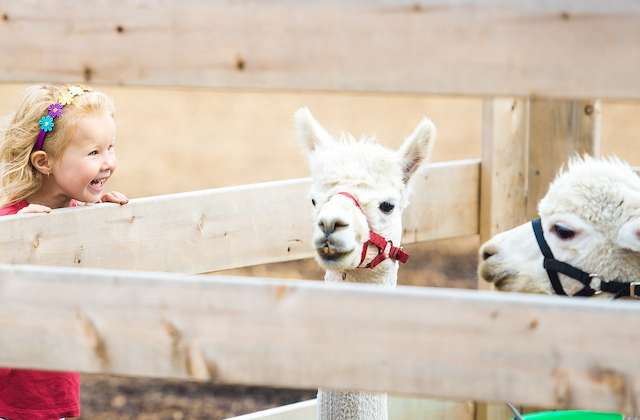
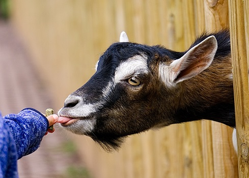

Welcome to the delightful petting zoo at Crawford Farm Park! Our petting zoo offers a unique and interactive experience for visitors of all ages.
Get up close and personal with a variety of friendly animals, including goats, sheep, rabbits, ducks, and more.

Petting and Feeding
Children and adults alike can enjoy the joy of petting and feeding the animals under the guidance of our knowledgeable staff. It's a fantastic hands-on experience that fosters a love and appreciation for animals and the natural world.

Displays
As you explore the petting zoo, keep an eye out for our educational displays, providing fascinating facts about each species and their habitats. We strive to create an engaging and informative environment where visitors can develop a deeper understanding of the animals' behaviors, needs, and conservation efforts.